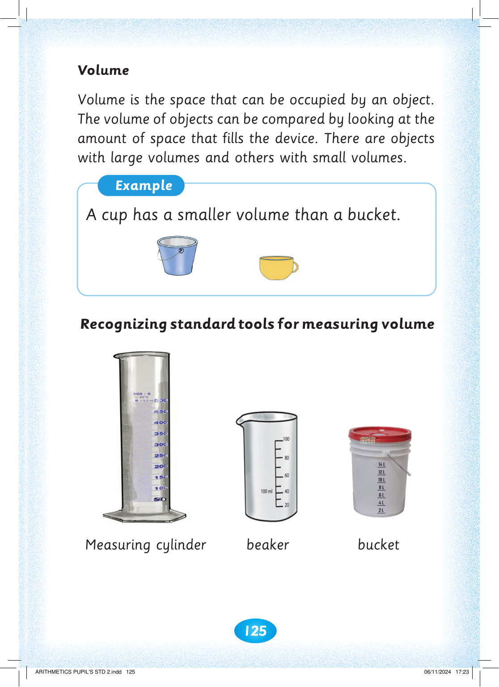
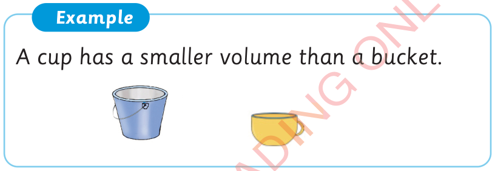

125



Volume

Volume is the space that can be occupied by an object.

The volume of objects can be compared by looking at the amount of space that fills the device. There are objects with large volumes and others with small volumes.
Example
A cup has a smaller volume than a bucket.
Recognizing standard tools for measuring volume
Measuring cylinder
beaker
bucket


ARITHMETICS PUPIL'S STD 2.indd 125
06/11/2024 17:23